Foreign Policy Community Indonesia (FPCI) is Indonesia's largest foreign policy organization and serves as a dynamic hub for international relations enthusiasts. Founded by Dr. Dino Patti Djalal, a seasoned diplomat and former Indonesian Ambassador to the United States who also served as Indonesia's Vice Minister of Foreign Affairs, FPCI was founded with a revolutionary vision to democratize foreign policy.
Traditionally, foreign policy has been viewed as an ivory tower — an exclusive domain reserved for diplomats and government officials. FPCI shatters this exclusivity by bringing discussions on global issues to the grassroots level. It is a non-partisan, independent, and non-political community designed to bring together students, lecturers, experts, and the general public.
Through high-level conferences, "Supermentor" sessions, and public dialogues, FPCI creates a space where Indonesia's role in the world is discussed not only in government offices, but also in lecture halls and coffee shops across the country.
FPCI Chapter Diponegoro University (UNDIP), established as one of the official university chapters of FPCI, serves as the primary extension of FPCI's national vision within the Diponegoro University campus. FPCI Chapter Undip is a vibrant intellectual ecosystem — a bridge connecting Undip students to the broader world of diplomacy and international affairs.
While the national body focuses on the broader Indonesian landscape, the Chapter focuses on developing a global mindset, particularly among youth in Central Java. It provides a platform for students regardless of their major to engage with complex geopolitical issues in an accessible, relevant, and engaging manner.
It is a local platform for the national spirit of "Nationalism and Internationalism."
